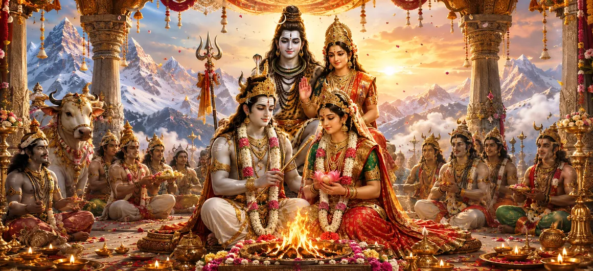

The Coronation and The Nuptials of Nandisvara
Chapter 7 of the Shatarudra Samhita continues the story of Nandisvara after he leaves his father to undertake severe penance. Nandin withdraws to an isolated place, concentrates his mind upon Tryambaka Sadashiva, and performs Rudra Japa with deep devotion.
Pleased with Nandin's penance, Lord Shiva appears with Goddess Parvati and grants him extraordinary blessings. Shiva declares that Nandin will be free from death and old age and will remain forever as the beloved leader of his Ganas.
Shiva then transforms Nandin with divine attributes, establishes the sacred Pañcanada, and later orders the Ganas to crown Nandisvara as their lord. The chapter culminates in Nandisvara's joyous nuptials with Suyasha, followed by blessings from Shiva, Parvati, Brahma, Vishnu, the gods, sages and Ganas.
Chapter 7 Highlights
Nandin's Severe Penance
Nandin performs intense penance in an isolated place while meditating upon Tryambaka Sadashiva and repeating the Rudra Japa.
Shiva's Divine Appearance
Pleased by Nandin's devotion, Shiva appears accompanied by Goddess Parvati and offers him a boon.
Freedom from Death
Shiva declares that Nandin will be free from death and old age and will remain forever beloved by him.
The Five Sacred Rivers
Five auspicious rivers emerge at the sacred Pañcanada after Shiva consecrates Nandin.
Coronation as Lord of the Ganas
Shiva commands the Ganas to crown Nandisvara as their lord and leader.
Marriage to Suyasha
Nandisvara's sacred nuptials are celebrated with Suyasha, daughter of the Maruts.
Core Topics in This Chapter
- 01 Nandin's Journey into Solitude →
- 02 Meditation and Rudra Japa →
- 03 Shiva Appears Before Nandin →
- 04 Shiva's Blessings to Nandin →
- 05 Nandin's Divine Transformation →
- 06 The Sacred Pañcanada →
- 07 The Coronation of Nandisvara →
- 08 The Gods and Sages Praise Nandisvara →
- 09 The Nuptials of Nandisvara and Suyasha →
- 10 Final Blessings of Shiva and the Gods →
Nandin's Journey into Solitude
After leaving his father and entering the forest, Nandin chooses an isolated place and steadies his mind. He undertakes severe penance, a discipline described as difficult even for accomplished sages.
His decision fulfills the resolve expressed at the end of the previous chapter. Rather than allowing the prediction of death to overwhelm him, Nandin turns directly toward spiritual practice.
Meditation and Rudra Japa
Nandin meditates upon Tryambaka Sadashiva within the lotus-like cavity of the heart. The form upon which he meditates is described as five-faced, ten-armed and three-eyed, with a calm and serene appearance.
Seated in deep meditation on the northern bank of the river, Nandin performs Rudra Japa. His mind remains concentrated and his thoughts pure.
The intensity of his devotion causes Lord Shiva to become pleased with his practice.
Shiva Appears Before Nandin
Pleased with Nandin's Rudra Japa and severe penance, Lord Shiva appears before him accompanied by Goddess Parvati and adorned with the crescent moon.
Shiva praises Nandin's austerity and asks him to state his desire, declaring himself to be the granter of boons.
Nandin responds with deep devotion, bowing at Shiva's feet and praising the Lord who removes the sorrows associated with old age and suffering.
Shiva's Blessings to Nandin
Shiva reassures Nandin that there is no reason for him to fear death. He explains that the two Brahmins who had previously revealed the danger had been sent by Shiva himself.
Shiva declares Nandin equal to himself and grants him freedom from death and old age. He also promises that Nandin will remain eternally the leader of the Ganas.
Shiva further promises that Nandin will always remain close to him and will be his beloved. Through Shiva's grace, Nandin will have neither birth, death nor old age.
Nandin's Divine Transformation
Shiva removes the lotus-garland from his own head and places it around Nandin's neck. As soon as the garland adorns Nandin, he assumes a divine form with three eyes and ten arms, resembling Shiva himself.
Shiva then takes Nandin by the hand and continues the divine consecration. He takes sacred water from his matted hair and names Nandin, establishing his transformed identity as Nandisvara.
The Sacred Pañcanada
Following Shiva's sacred act, five auspicious rivers flow forth. They are named Jatodaka, Trisrotas, Vrishadhvani, Svarnodaka and Jambunadi.
The sacred basin associated with these rivers is called Pañcanada. It is described as an auspicious place of Shiva situated near Japesvara.
The chapter praises the sanctity of Pañcanada and associates bathing there, performing Japa of the Lord of Lords, and worshipping Shiva with attainment of Shiva's spiritual union.
The Coronation of Nandisvara
Shiva tells Goddess Parvati that he intends to coronate Nandin and proclaim him the lord of the Ganas. Parvati warmly agrees and describes Shailadi as her beloved son.
Shiva then remembers the leading Ganas. Countless powerful Ganas appear before him, bearing forms associated with Shiva and waiting for his command.
Shiva announces that Nandisvara is his son and beloved leader of the Ganas. He commands the Ganas to lovingly crown Nandisvara as their lord and as the refuge of all his Ganas.
The Gods and Sages Praise Nandisvara
The Ganas prepare everything required for the consecration. Narayana, Indra and other gods, together with the sages, arrive from the various worlds with joyful faces.
At Shiva's command, Brahma carefully performs Nandin's coronation. Vishnu, Indra, the guardians of the quarters, Brahma and the sages then praise Nandisvara.
The Ganas, gods and Asuras also honor Nandisvara with reverence and victory cries. Thus Nandin's appointment as the leader of Shiva's Ganas is formally established.
The Nuptials of Nandisvara and Suyasha
Following the coronation, the nuptial ceremony of Nandisvara is conducted with great joy at the behest of Brahma. Vishnu, Brahma and the other divine beings participate in the celebration.
Suyasha, described as the gentle and beautiful daughter of the Maruts, becomes the divine wife of Nandisvara.
The newly married couple is honored with beautiful ornaments, a splendid throne and auspicious gifts. Nandisvara receives a bull, a white elephant, a lion, a lion-banner, a chariot and other sacred articles.
Final Blessings of Shiva and the Gods
After the marriage, Nandisvara and Suyasha bow at the feet of Shiva, Brahma and Vishnu for their welfare. Shiva lovingly blesses Nandisvara and his wife.
Shiva declares that Nandin will always remain his favorite, endowed with prosperity, yogic power, strength and victory. He further declares that wherever Shiva is, Nandin will also be there, and wherever Nandin is, Shiva will also be present.
Shiva also grants blessings to Shilada and Nandin's grandfather. Parvati grants Suyasha a boon that she will possess three eyes, be free from future birth, and remain devoted to Parvati together with her husband, sons and grandsons.
Brahma, Vishnu, the gods and the Ganas also grant blessings to the divine couple. Shiva then departs with Nandisvara, Suyasha and the members of their family.
Key Teachings of Chapter 7
Penance and Perseverance
Nandin's severe penance shows the power of sustained spiritual discipline and unwavering concentration.
Grace Through Devotion
Shiva's appearance demonstrates the fulfillment that follows sincere devotion and spiritual practice.
Divine Responsibility
Nandisvara's coronation represents the granting of spiritual authority together with responsibility toward Shiva's Ganas.
Sacred Union
The marriage of Nandisvara and Suyasha is celebrated as part of the divine order established by Shiva.
Sanctity of Sacred Places
The manifestation of the five rivers emphasizes the spiritual importance attributed to sacred places connected with Shiva.
Devotion as the Highest Desire
Nandin's expressed desire for enduring devotion to Parvati's feet shows the value placed on devotion above worldly gain.
Spiritual Reflection
Chapter 7 presents the completion of Nandin's transformation from a devotee facing the fear of death into Nandisvara, the immortal leader of Shiva's Ganas. His transformation does not arise from worldly power. It follows his sincere penance, meditation and devotion to Shiva. The chapter also shows that divine authority is accompanied by responsibility, reverence and service. Nandisvara receives an exalted position, yet his response remains devotional. When asked by Goddess Parvati to state his desire, he asks for enduring devotion to her feet. His coronation and marriage therefore represent not merely worldly honors, but the establishment of his divine role within Shiva's sacred order.
Living the Message of Chapter 7
Nandin's example teaches that spiritual transformation begins with disciplined effort. His response to the fear of death was not despair, but focused practice.
The chapter also offers a lesson about responsibility. When Nandisvara is appointed leader of the Ganas, his elevated position is presented as a sacred responsibility rather than merely a privilege.
Most importantly, Nandin's prayer for devotion reminds devotees that the highest spiritual aspiration is not necessarily material prosperity or power, but unwavering devotion to the Divine.
Key Spiritual Concepts
The divine form of Nandin established by Lord Shiva and appointed as the lord of the Ganas.
The sacred repetition performed by Nandin during his intense meditation and penance.
The sacred basin associated with the five auspicious rivers manifested through Shiva's divine act.
The divine attendants and followers of Lord Shiva over whom Nandisvara is appointed leader.
The beautiful daughter of the Maruts who becomes the divine wife of Nandisvara.
The divine favor through which Nandin receives freedom from death, divine attributes, leadership and spiritual blessings.
Chapter Summary
Shatarudra Samhita Chapter 7 begins with Nandin performing severe penance in an isolated place after leaving his father. He meditates upon five-faced, ten-armed and three-eyed Tryambaka Sadashiva and performs Rudra Japa on the northern bank of the river. Pleased with his devotion, Shiva appears with Parvati and declares that Nandin will be free from death and old age and will forever be his beloved leader of the Ganas. Shiva places his own garland around Nandin's neck, after which Nandin becomes three-eyed and ten-armed like Shiva. Sacred rivers flow at Pañcanada. Shiva then decides to coronate Nandin as lord of the Ganas. Brahma performs the coronation while Vishnu, Indra, the guardians of the quarters, sages, gods, Ganas and Asuras praise him. Nandisvara's nuptials are then celebrated with Suyasha, daughter of the Maruts. Shiva and Parvati, along with Brahma, Vishnu, the gods and Ganas, grant blessings to the divine couple. The chapter concludes with Shiva departing with Nandisvara, Suyasha and their family.
Frequently Asked Questions
① What is the main subject of Chapter 7?
The chapter describes Nandin's penance, Shiva's blessings, Nandin's transformation into Nandisvara, his coronation as lord of the Ganas, and his marriage to Suyasha.
② What form of Shiva did Nandin meditate upon?
Nandin meditated upon Tryambaka Sadashiva, described as five-faced, ten-armed and three-eyed with a calm appearance.
③ What did Shiva promise Nandin?
Shiva promised that Nandin would be free from death and old age, would remain his beloved, and would forever lead the Ganas.
④ What happened when Shiva placed his garland on Nandin?
Nandin became three-eyed and ten-armed like Shiva.
⑤ What are the five rivers of Pañcanada?
They are Jatodaka, Trisrotas, Vrishadhvani, Svarnodaka and Jambunadi.
⑥ Who crowned Nandisvara?
At Shiva's command, Brahma performed Nandin's coronation, while the gods, sages and Ganas honored him.
⑦ Who became Nandisvara's wife?
Suyasha, the beautiful daughter of the Maruts, became Nandisvara's divine wife.
⑧ What did Nandin ask from Goddess Parvati?
Nandin asked that his excellent devotion toward the feet of Goddess Parvati should always remain.
⑨ What blessings did Shiva give Nandisvara after the marriage?
Shiva blessed Nandisvara with prosperity, yogic power, strength, victory and eternal closeness to Shiva.
⑩ How does Chapter 7 connect to Chapter 8?
Chapter 7 concludes the story of Nandisvara's coronation and marriage, while Chapter 8 begins the account of the Bhairava incarnation of Lord Shiva.
“Wherever I am, you shall also be, and wherever you are, I shall also be.”
Continue Through Shatarudra Samhita
Chapter 7 completes the sacred story of Nandisvara's transformation, coronation and marriage. Continue to Chapter 8 to enter the story of the Bhairava incarnation of Lord Shiva.